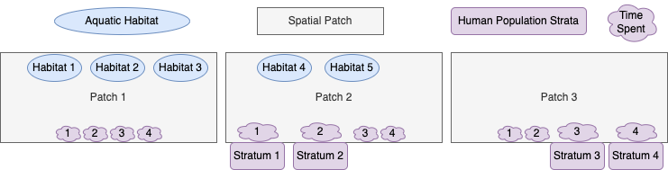

Introduction
We show how to setup, solve, and analyze models of mosquito-borne
pathogen transmission dynamics and control using modular software. This
vignette is designed to explain modular notation by constructing a model
with five aquatic habitats (\(l=5\)),
three patches (\(p=3\)), and four human
population strata (\(n=4\)). We call it
5-3-4.
Diagram
The model 5-3-4 is designed to illustrate some important
features of the framework and notation. We assume that:
the first three habitats are found in patch 1; the last two are in patch 2; patch 3 has no habitats.
patch 1 has no residents; patches 2 and 3 are occupied, each with two different population strata;
Transmission among patches is modeled using the concept of time spent, which is similar to the visitation rates that have been used in other models. While the strata have a residency (i.e; a patch they spend most of their time in), each stratum allocates their time across all the habitats.

Parameters
We already know three important parameters, \(l\), \(p\)
and \(n\) because they are determined
in the early stages of model building. The exDE package
expects all parameters to be contained in a list object, containing
nHabitats, nPatches, and nStrata
which correspond to l, p and
n.
params = make_parameters_xde()
params$nHabitats = 5
params$nPatches = 3
params$nStrata = 4Aquatic Habitat Membership Matrix
The aquatic habitat membership matrix \(\mathcal{N}\) is a \(p \times l\) matrix mapping aquatic habitats to the patches which contain them. It should be attached directly to the parameters list.
\[\begin{equation} {\cal N} = \left[ \begin{array}{ccccc} 1 & 1 & 1 & 0 & 0 \\ 0 & 0 & 0 & 1 & 1\\ 0 & 0 & 0 & 0 & 0\\ \end{array} \right] \end{equation}\]
Egg Dispersal Matrix
The egg dispersal matrix \(\mathcal{U}\) is a \(l \times p\) matrix describing how eggs laid by adult mosquitoes in a patch are allocated among the aquatic habitats in that patch. It is also attached directly to the parameters list.
\[\begin{equation} {\cal U} = \left[ \begin{array}{ccccc} .7 & 0 & 0\\ .2 & 0 & 0\\ .1 & 0 & 0\\ 0 & .8 & 0\\ 0 & .2 & 0\\ \end{array} \right] \end{equation}\]
Aquatic Mosquito Parameters
For this simulation, we use the basic competition model of larval
dynamics (see more here). It requires
specification of three parameters, \(\psi\) (maturation rates), \(\phi\) (density-independent mortality
rates), and \(\theta\)
(density-dependent mortality terms), and initial conditions. The
function exDE::make_parameters_L_basic does basic checking
of the input parameters and returns a list with the correct class for
method dispatch. The returned list is attached to the main parameter
list with name Lpar.
L0 <- rep(1, params$nHabitats)
psi <- rep(1/8, params$nHabitats)
phi <- rep(1/8, params$nHabitats)
theta <- c(1/10, 1/20, 1/40, 1/100, 1/10)
params = make_parameters_L_basic(pars = params, psi = psi, phi = phi, theta = theta)
params = make_inits_L_basic(pars = params, L0)Adult Mosquito Parameters
We use the ODE version of the generalized Ross-Macdonald model (see
more here). Part of the specification of
parameters includes the construction of the mosquito dispersal matrix
\(\mathcal{K}\), and the mosquito
demography matrix \(\Omega\). Like for
the aquatic parameters, we use
exDE::make_parameters_MYZ_RM_ode to check parameter types
and return a list with the correct class for method dispatch. We attach
the returned list to the main parameter list with name
MYZpar.
g <- rep(1/12, params$nPatches)
sigma <- rep(1/12/2, params$nPatches)
calK <- t(matrix(
c(c(0, .6, .3),
c(.4, 0, .7),
c(.6, .4, 0)), 3, 3))
f <- rep(1/3, params$nPatches)
q <- rep(0.9, params$nPatches)
nu <- c(1/3,1/3,0)
eggsPerBatch <- 30
tau <- 12
M0 <- rep(100, params$nPatches)
G0 <- rep(10, params$nPatches)
Y0 <- rep(1, params$nPatches)
Z0 <- rep(0, params$nPatches)
Omega <- make_Omega(g, sigma, calK, params$nPatches)
Upsilon <- expm::expm(-Omega*tau)
params = make_parameters_MYZ_GeRM(pars = params, g = g, sigma = sigma, calK = calK, tau = tau, f = f, q = q, nu = nu, eggsPerBatch = eggsPerBatch, solve_as = "ode")
params = make_inits_MYZ_GeRM(params, M0 = M0, G0 = G0, Y0 = Y0, Z0 = Z0, Upsilon0=Upsilon)Mixing
In this model, we define four population strata. We can describe their residency with a vector describing membership:
Although not directly used in this example, we create the residency membership matrix \(\mathcal{J}\), a \(p \times n\) matrix indicating which patch each human population strata resides in.
\[\begin{equation} {\cal J} = \left[ \begin{array}{cccc} 0 & 0 & 0 & 0 \\ 1 & 1 & 0 & 0 \\ 0 & 0 & 1 & 1 \\ \end{array} \right] \end{equation}\]
We then create the time at risk matrix \(\Psi\), a \(p \times n\) matrix describing how each human strata spends their time across patches.
\[\begin{equation} \Psi = \left[ \begin{array}{cccc} 0.01 & .01 & .001 & .001 \\ 0.95 & .92 & .04 & .02 \\ 0.04 & .02 & .959 & .929 \\ \end{array} \right] \end{equation}\]
We use the basic SIS (Susceptible-Infected-Susceptible) model for the
human component (see more here). We set it
up like the rest of the components, using
exDE::make_parameters_X_SIS to make the correct return
type, which is attached to the parameter list with name
Xpar.
We use the null demographic model, which assumes a constant population size (constant \(H\)).
H <- matrix(c(10,90, 100, 900), 4, 1)
params = make_parameters_demography_null(pars = params, H=H, membershipH=membershipH, searchWtsH=searchWtsH, TimeSpent=Psi)
X0 <- as.vector(0.2*H)
r <- rep(1/200, params$nStrata)
b <- rep(0.55, params$nStrata)
c <- c(0.1, .02, .1, .02)
params = make_parameters_X_SIS(pars = params, b = b, c = c, r = r)
params = make_inits_X_SIS(params, X0)Simulation
Exogenous forcing and vector control
We need to specify models for exogenous forcing and vector control. We simply use the null models for both (no presence of vector control and no exogenous forcing).
params = make_parameters_exogenous_null(params)
params = make_parameters_vc_null(params)Initial Conditions
After the parameters for 5-3-4 have been specified, we
can generate the indices for the model and attach them to the parameter
list.
params = make_indices(params)Now we can set the initial conditions of the model.
y0 = get_inits(params)Numerical Solution
Now we can pass the vector of initial conditions, y, our
parameter list params, and the function
exDE::xDE_diffeqn to the differential equation solvers in
deSolve::ode to generate a numerical trajectory. The
classes of Xpar, MYZpar, and Lpar
in params will ensure that the right methods are invoked
(dispatched) to solve your model.
out <- deSolve::ode(y = y0, times = 0:365, func = xDE_diffeqn, parms = params, method = "lsoda")Plot Output
With a small amount of data wrangling made easier by the
data.table package, we can plot the output.
colnames(out)[params$L_ix+1] <- paste0('L_', 1:params$nHabitats)
colnames(out)[params$M_ix+1] <- paste0('M_', 1:params$nPatches)
colnames(out)[params$G_ix+1] <- paste0('G_', 1:params$nPatches)
colnames(out)[params$Y_ix+1] <- paste0('Y_', 1:params$nPatches)
colnames(out)[params$Z_ix+1] <- paste0('Z_', 1:params$nPatches)
colnames(out)[params$X_ix+1] <- paste0('X_', 1:params$nStrata)
out <- out[, -c(params$Upsilon_ix+1)]
out <- as.data.table(out)
out <- melt(out, id.vars = 'time')
out[, c("Component", "Stratification") := tstrsplit(variable, '_', fixed = TRUE)]
out[, variable := NULL]
ggplot(data = out, mapping = aes(x = time, y = value, color = Stratification)) +
geom_line() +
facet_wrap(. ~ Component, scales = 'free') +
theme_bw()